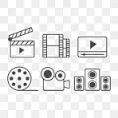

لماذا الوسائط المتعددة مهمة الآن؟
الوسائط المتعددة تحول المحتوى من نص جامد إلى تجربة تفاعلية: نص، صور، صوت، فيديو، وأنيميشن تعمل معًا لتجعل المعلومة أسرع فهماً وأكثر تأثيرًا.
مقدمة قصيرة — شاهد لمحة سريعة عن التجربة
أنواع الوسائط المتعددة (المهمة للمحتوى الرقمي)
هناك عدّة أنواع تُستخدم بحسب الهدف والجمهور؛ سنشرح الخمسة الأساسية والفرق بينها:
- 1) النص (Text)
- 2) الصور الثابتة (Images)
- 3) الصوت (Audio)
- 4) الفيديو (Video)
- 5) التفاعل/الأنيميشن (Interactive & Animation)
النص هو العنصر الأساسي: عناوين، فقرات، تسميات، ونصوص مُساعدة تظهر على الشاشة. يجب أن يكون واضحًا وقابلًا للقراءة ويعمل كمُلخص أو دليل لباقي الوسائط.
الصور والفوتوغرافيا والرسوم البيانية تُسرّع فهم الفكرة البصرية وتقلل من كمية النص المطلوب لشرح نقطة معينة.
التعليق الصوتي، الموسيقى والمؤثرات تضيف إحساسًا ووتيرة للمحتوى؛ مفيدة جدًا في قصص السرد والتدريب الصوتي.
الفيديو يجمع بين الحركة، الصوت، والصورة ليُقدّم شروحات عملية أو سردًا سريعًا؛ مثالي لشرح إجراءات أو عرض حالات واقعية.
عناصر تفاعلية مثل الأزرار، الاختبارات، والرسوم المتحركة تجعل المستخدم جزءًا من التجربة بدلًا من متلقٍ سلبي.
عند دمج هذه الأنواع بشكل متماسك يحصل المحتوى على عمق أكبر وفعالية أعلى: استخدمي النص كمرشد، والصورة والفيديو لتوضيح، والصوت لإثارة الانتباه، والتفاعل لقياس الفهم.
